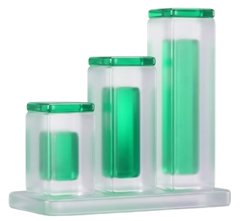
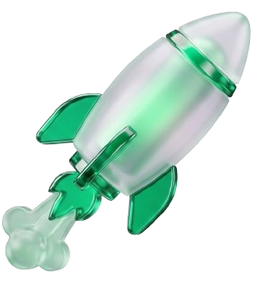
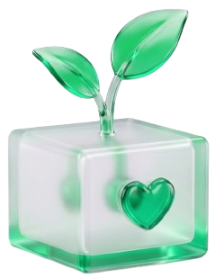

Recupere Custos Operacionais
Transforme o custo de descarte em faturamento. Recupere o valor investido em insumos, produtos perto do vencimento ou itens fora do "padrão estético" tradicional que iriam direto para o lixo.
Conheça as vantagens de integrar o seu negócio ao nosso ecossistema sustentável.

Transforme o custo de descarte em faturamento. Recupere o valor investido em insumos, produtos perto do vencimento ou itens fora do "padrão estético" tradicional que iriam direto para o lixo.

Os usuários compram e pagam pelo nosso aplicativo, mas fazem a retirada física direto no seu balcão. Isso gera um fluxo espontâneo de pessoas na sua loja, criando a oportunidade perfeita para vendas cruzadas.

Ganhe o reconhecimento do seu bairro como uma empresa sustentável e parceira da comunidade. Mostre na prática o seu compromisso com o desperdício zero e o apoio automático a ONGs da região.
Uma rotina simples e rápida que não sobrecarrega a sua equipe.
Sabemos que a rotina do comércio é agitada. Por isso, desenhamos uma plataforma que funciona em apenas três etapas rápidas, sem adicionar burocracia ou trabalho extra para os seus funcionários: